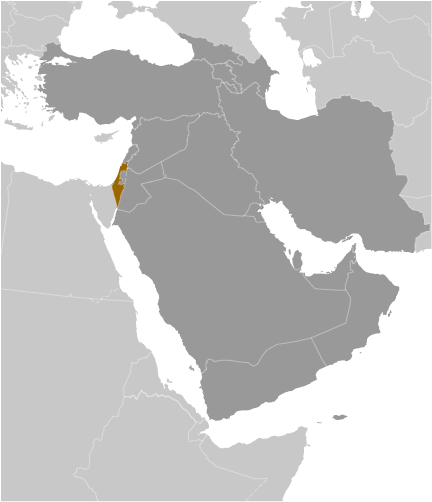
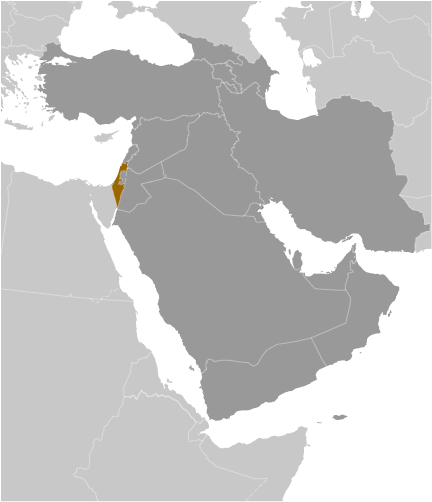

Middle East :: ISRAEL
Introduction :: ISRAEL
-
Following World War II, Britain withdrew from its mandate of Palestine, and the UN proposed partitioning the area into Arab and Jewish states, an arrangement rejected by the Arabs. Nonetheless, an Israeli state was declared in 1948, and Israel subsequently defeated the Arab armies in a series of wars that did not end deep tensions between the two sides. (The territories Israel has occupied since the 1967 war are not included in the Israel country profile, unless otherwise noted.) On 25 April 1982, Israel withdrew from the Sinai Peninsula pursuant to the 1979 Israel-Egypt Peace Treaty. In keeping with the framework established at the Madrid Conference in October 1991, Israel conducted bilateral negotiations with Palestinian representatives and Syria to achieve a permanent settlement with each. Israel and Palestinian officials on 13 September 1993 signed a Declaration of Principles (also known as the "Oslo Accords"), enshrining the idea of a two-state solution to their conflict and guiding an interim period of Palestinian self-rule. The parties achieved six additional significant interim agreements between 1994 and 1999 aimed at creating the conditions for a two-state solution, but most were never fully realized. Outstanding territorial and other disputes with Jordan were resolved in the 26 October 1994 Israel-Jordan Peace Treaty.Progress toward a final status agreement with the Palestinians was undermined by Israeli-Palestinian violence between 2001 and February 2005. Israel in 2005 unilaterally disengaged from the Gaza Strip, evacuating settlers and its military while retaining control over most points of entry into the Gaza Strip. The election of HAMAS to head the Palestinian Legislative Council in 2006 temporarily froze relations between Israel and the Palestinian Authority (PA). Israel engaged in a 34-day conflict with Hizballah in Lebanon from July-August 2006 and a 23-day conflict with HAMAS in the Gaza Strip from December 2008-January 2009. In November 2012, Israel engaged in a seven-day conflict with HAMAS in the Gaza Strip. Direct talks with the Palestinians most recently launched in July 2013 but were suspended in April 2014. The talks represented the fourth concerted effort to resolve final status issues between the sides since they were first discussed at Camp David in 2000. Three months later HAMAS and other militant groups launched rockets into Israel, which led to a 51-day conflict between Israel and militants in Gaza.
Geography :: ISRAEL
-
Middle East, bordering the Mediterranean Sea, between Egypt and Lebanon31 30 N, 34 45 EMiddle Easttotal: 20,770 sq kmland: 20,330 sq kmwater: 440 sq kmcountry comparison to the world: 154slightly larger than New Jerseytotal: 1,068 kmborder countries (6): Egypt 208 km, Gaza Strip 59 km, Jordan 307 km, Lebanon 81 km, Syria 83 km, West Bank 330 km273 kmterritorial sea: 12 nmcontinental shelf: to depth of exploitationtemperate; hot and dry in southern and eastern desert areasNegev desert in the south; low coastal plain; central mountains; Jordan Rift Valleymean elevation: 508 melevation extremes: lowest point: Dead Sea -431 mhighest point: Har Meron 1,208 mtimber, potash, copper ore, natural gas, phosphate rock, magnesium bromide, clays, sandagricultural land: 23.8%arable land 13.7%; permanent crops 3.8%; permanent pasture 6.3%forest: 7.1%other: 69.1% (2011 est.)2,250 sq km (2012)population concentrated in and around Tel-Aviv, as well as around the Sea of Galilee; the south remains sparsely populated with the exception of the shore of the Gulf of Aqabasandstorms may occur during spring and summer; droughts; periodic earthquakeslimited arable land and restricted natural freshwater resources; desertification; air pollution from industrial and vehicle emissions; groundwater pollution from industrial and domestic waste, chemical fertilizers, and pesticidesparty to: Biodiversity, Climate Change, Climate Change-Kyoto Protocol, Desertification, Endangered Species, Hazardous Wastes, Ozone Layer Protection, Ship Pollution, Wetlands, Whalingsigned, but not ratified: Marine Life ConservationLake Tiberias (Sea of Galilee) is an important freshwater source; the Dead Sea is the second saltiest body of water in the world (after Lake Assal in Djibouti); in 2017, there were 422 settlements in the Israeli-occupied territories - 42 settlements in the Golan Heights, 380 sites in the occupied Palestinian territories to include 213 settlements and 132 outposts in the West Bank, and 35 settlements in East Jerusalem; there are no Israeli settlements in the Gaza Strip, as all were evacuated in 2005 (2017)
People and Society :: ISRAEL
-
8,299,706 (includes populations of the Golan Heights of Golan Sub-District and also East Jerusalem, which was annexed by Israel after 1967) (July 2016 est.)note: approximately 22,000 Israeli settlers live in the Golan Heights (2016); approximately 201,000 Israeli settlers live in East Jerusalem (2014) (July 2017 est.)country comparison to the world: 97noun: Israeli(s)adjective: IsraeliJewish 74.8% (of which Israel-born 75.6%, Europe/America/Oceania-born 16.6%, Africa-born 4.9%, Asia-born 2.9%), non-Jewish 25.2% (mostly Arab) (2015 est.)Hebrew (official), Arabic (used officially for Arab minority), English (most commonly used foreign language)Jewish 74.8%, Muslim 17.6%, Christian 2%, Druze 1.6%, other 4% (2015 est.)0-14 years: 27.51% (male 1,168,351/female 1,114,902)15-24 years: 15.53% (male 658,572/female 630,675)25-54 years: 37.17% (male 1,577,187/female 1,507,793)55-64 years: 8.46% (male 344,922/female 357,301)65 years and over: 11.33% (male 421,660/female 518,343) (2017 est.)total dependency ratio: 64.2youth dependency ratio: 45.7elderly dependency ratio: 18.4potential support ratio: 5.4 (2015 est.)total: 29.9 yearsmale: 29.3 yearsfemale: 30.6 years (2017 est.)country comparison to the world: 1181.51% (2017 est.)country comparison to the world: 7618.1 births/1,000 population (2017 est.)country comparison to the world: 965.2 deaths/1,000 population (2017 est.)country comparison to the world: 1872.2 migrant(s)/1,000 population (2017 est.)country comparison to the world: 46population concentrated in and around Tel-Aviv, as well as around the Sea of Galilee; the south remains sparsely populated with the exception of the shore of the Gulf of Aqabaurban population: 92.3% of total population (2017)rate of urbanization: 1.5% annual rate of change (2015-20 est.)Tel Aviv-Yafo 3.608 million; Haifa 1.097 million; JERUSALEM (proclaimed capital) 839,000 (2015)at birth: 1.05 male(s)/female0-14 years: 1.05 male(s)/female15-24 years: 1.05 male(s)/female25-54 years: 1.05 male(s)/female55-64 years: 0.96 male(s)/female65 years and over: 0.81 male(s)/femaletotal population: 1.01 male(s)/female (2016 est.)27.6 years (2015 est.)5 deaths/100,000 live births (2015 est.)country comparison to the world: 170total: 3.4 deaths/1,000 live birthsmale: 3.4 deaths/1,000 live birthsfemale: 3.5 deaths/1,000 live births (2017 est.)country comparison to the world: 204total population: 82.5 yearsmale: 80.7 yearsfemale: 84.5 years (2017 est.)country comparison to the world: 122.64 children born/woman (2017 est.)country comparison to the world: 717.8% of GDP (2014)country comparison to the world: 593.62 physicians/1,000 population (2014)3.3 beds/1,000 population (2012)improved:urban: 100% of populationrural: 100% of populationtotal: 100% of populationunimproved:urban: 0% of populationrural: 0% of populationtotal: 0% of population (2015 est.)improved:urban: 100% of populationrural: 100% of populationtotal: 100% of populationunimproved:urban: 0% of populationrural: 0% of populationtotal: 0% of population (2015 est.)NANANA26.1% (2016)country comparison to the world: 455.9% of GDP (2013)country comparison to the world: 57definition: age 15 and over can read and writetotal population: 97.8%male: 98.7%female: 96.8% (2011 est.)total: 16 yearsmale: 16 yearsfemale: 16 years (2014)total: 8.6%male: 8.2%female: 9.1% (2016 est.)country comparison to the world: 90
Government :: ISRAEL
-
conventional long form: State of Israelconventional short form: Israellocal long form: Medinat Yisra'ellocal short form: Yisra'eletymology: named after the ancient Kingdom of Israel; according to Biblical tradition, the Jewish patriarch Jacob received the name "Israel" ("He who struggles with God") after he wrestled an entire night with an angel of the Lord; Jacob's 12 sons became the ancestors of the Israelites, also known as the Twelve Tribes of Israel, who formed the Kingdom of Israelparliamentary democracyname: Jerusalem: note - while Israel proclaimed Jerusalem as its capital in 1950, the international community does not recognize it as such; the US, like all other countries, maintains its embassy in Tel Aviv-Yafogeographic coordinates: 31 46 N, 35 14 Etime difference: UTC+2 (7 hours ahead of Washington, DC, during Standard Time)daylight saving time: +1hr, Friday before the last Sunday in March; ends the last Sunday in October6 districts (mehozot, singular - mehoz); Central, Haifa, Jerusalem, Northern, Southern, Tel Aviv14 May 1948 (from League of Nations mandate under British administration)Independence Day, 14 May (1948); note - Israel declared independence on 14 May 1948, but the Jewish calendar is lunar and the holiday may occur in April or Mayhistory: no formal constitution; some functions of a constitution are filled by the Declaration of Establishment (1948), the Basic Laws, and the Law of Return (as amended)amendments: proposed by Government of Israel ministers or by the Knesset; passage requires a majority vote of Knesset members and subject to Supreme Court judicial review; 11 of the 13 Basic Laws have been amended at least once, latest in 2014 (2016)mixed legal system of English common law, British Mandate regulations, and Jewish, Christian, and Muslim religious lawshas not submitted an ICJ jurisdiction declaration; withdrew acceptance of International Criminal Court jurisdiction in 2002citizenship by birth: nocitizenship by descent only: at least one parent must be a citizen of Israeldual citizenship recognized: yes, but naturalized citizens are not allowed to maintain dual citizenshipresidency requirement for naturalization: 3 out of the 5 years preceding the application for naturalizationnote: Israeli law (Law of Return, 5 July 1950) provides for the granting of citizenship to any Jew - defined as a person being born to a Jewish mother or having converted to Judaism while renouncing any other religion - who immigrates to and expresses a desire to settle in Israel on the basis of the Right of aliyah; the 1970 amendment of this act extended the right to family members including the spouse of a Jew, any child or grandchild, and the spouses of children and grandchildren18 years of age; universal; 17 years of age for municipal electionschief of state: President Reuven RIVLIN (since 27 July 2014)head of government: Prime Minister Binyamin NETANYAHU (since 31 March 2009)cabinet: Cabinet selected by prime minister and approved by the Knessetelections/appointments: president indirectly elected by the Knesset for a 7-year term (limited to 1 term); election last held on 10 June 2014 (next to be held in 2021 but can be called earlier); following legislative elections, the president, in consultation with party leaders, tasks a Knesset member (usually the member of the largest party) with forming a governmentelection results: Reuven RIVLIN elected president in second round; Knesset vote - Reuven RIVLIN (Likud) 63, Meir SHEETRIT (The Movement) 53, other/invalid 4description: unicameral Knesset (120 seats; members directly elected in a single nationwide constituency by proportional representation vote; members serve 4-year terms)elections: last held on 17 March 2015 (next to be held by 5 November 2019 but can be called earlier)election results: percent of vote by party - Likud 23.4%, Zionist Camp 18.7%, Joint List 10.5%, Yesh Atid 8.8%, Kulanu 7.5%, The Jewish Home 6.7%, Shas, 5.7%, Yisrael Beitenu 5.1%, UTJ 5.0%, Meretz 3.9%, Yachad 3.0%, other 1.7%; seats by party - Likud 30, Zionist Camp 24, Joint List 13, Yesh Atid 11, Kulanu 10, The Jewish Home 8, Shas 7, Yisrael Beitenu 6, UTJ 6, Meretz 5highest court(s): Supreme Court (consists of the chief justice and 14 judges)judge selection and term of office: judges selected by the Judicial Selection Committee consisting of 3 Supreme Court judges, 2 Cabinet members including the Minister of Justice as chairman, 2 Knesset members, and 2 representatives from the Israel Bar Association; judges can serve up to mandatory retirement at age 70subordinate courts: Court for Administrative Matters; district and magistrate courts; national and regional labor courts; special and religious courtsBalad [Jamal ZAHALKA]Democratic Front for Peace and Equality or HADASH [Ayman ODEH]Israeli Labor Party [Avi GABBAY]Joint List [Ayman ODEH] (coalition includes Balad, HADASH, United Arab List, and Ta'al))Kulanu [Moshe KAHLON]Likud [Binyamin NETANYAHU]Meretz [Zehava GALON]SHAS [Arye DERI]Ta'al (Arab Movement for Renewal) [Ahmad TIBI]Tekumah/National Union (Ichud Leumi) [Uri ARIEL]The Jewish Home (Habayit Hayehudi) [Naftali BENNETT]The Movement (Hatnuah) [Tzipora "Tzipi" LIVNI]United Arab List [Masud GANAIM]United Torah Judaism or UTJ [Yaakov LITZMAN] (an alliance of three parties)Yachad [Eli YISHAI]Yesh Atid [Yair LAPID]Yisrael Beiteinu [Avigdor LIEBERMAN]Breaking the Silence or BtS [Yehuda SHAUL] collects testimonies from soldiers who served in the West Bank and Gaza StripB'Tselem [Hagai EL-AD] (monitors human rights abuses)Peace Now [Yariv OPPENHEIMER] (supports territorial concessions in the West Bank and Gaza Strip)YESHA Council [Avi ROEHD] (promotes settler interests and opposes territorial compromise)BIS, BSEC (observer), CE (observer), CERN, CICA, EBRD, FAO, IADB, IAEA, IBRD, ICAO, ICC (national committees), ICRM, IDA, IFAD, IFC, IFRCS, ILO, IMF, IMO, IMSO, Interpol, IOC, IOM, IPU, ISO, ITSO, ITU, ITUC (NGOs), MIGA, OAS (observer), OECD, OPCW (signatory), OSCE (partner), Pacific Alliance (observer), Paris Club, PCA, SELEC (observer), UN, UNCTAD, UNESCO, UNHCR, UNIDO, UNWTO, UPU, WCO, WHO, WIPO, WMO, WTOchief of mission: Ambassador Ron DERMER (since 3 December 2013)chancery: 3514 International Drive NW, Washington, DC 20008telephone: [1] (202) 364-5500FAX: [1] (202) 364-5607consulate(s) general: Atlanta, Boston, Chicago, Houston, Los Angeles, Miami, New York, Philadelphia, San Franciscochief of mission: Ambassador David FRIEDMAN (since 23 May 2017)embassy: 71 HaYarkon Street, Tel Aviv 6343229telephone: [972] (3) 519-7475FAX: [972] (3) 516-4390consular agent: Haifawhite with a blue hexagram (six-pointed linear star) known as the Magen David (Star of David or Shield of David) centered between two equal horizontal blue bands near the top and bottom edges of the flag; the basic design resembles a traditional Jewish prayer shawl (tallit), which is white with blue stripes; the hexagram as a Jewish symbol dates back to medieval timesnote: the Israeli flag proclamation states that the flag colors are sky blue and white, but the exact shade of blue has never been set and can vary from a light to a dark blueStar of David (Magen David), menorah (seven-branched lampstand); national colors: blue, whitename: "Hatikvah" (The Hope)lyrics/music: Naftali Herz IMBER/traditional, arranged by Samuel COHENnote: adopted 2004, unofficial since 1948; used as the anthem of the Zionist movement since 1897; the 1888 arrangement by Samuel COHEN is thought to be based on the Romanian folk song "Carul cu boi" (The Ox Driven Cart)
Economy :: ISRAEL
-
Israel has a technologically advanced free market economy. Cut diamonds, high-technology equipment, and pharmaceuticals are among its leading exports. Its major imports include crude oil, grains, raw materials, and military equipment. Israel usually posts sizable trade deficits, which are offset by tourism and other service exports, as well as significant foreign investment inflows.Between 2004 and 2013, growth averaged nearly 5% per year, led by exports. The global financial crisis of 2008-09 spurred a brief recession in Israel, but the country entered the crisis with solid fundamentals, following years of prudent fiscal policy and a resilient banking sector. Israel's economy also weathered the 2011 Arab Spring because strong trade ties outside the Middle East insulated the economy from spillover effects.Slowing domestic and international demand and decreased investment resulting from Israel’s uncertain security situation reduced GDP growth to an average of roughly 2.6% per year during the period 2014-16. Natural gas fields discovered off Israel's coast since 2009 have brightened Israel's energy security outlook. The Tamar and Leviathan fields were some of the world's largest offshore natural gas finds in the last decade. Political and regulatory issues have delayed the development of the massive Leviathan field, but production from Tamar provided a 0.8% boost to Israel's GDP in 2013 and a 0.3% boost in 2014. One of the most carbon intense OECD countries, Israel generates about 57% of its power from coal and only 2.6% from renewable sources.Income inequality and high housing and commodity prices continue to be a concern for many Israelis. Israel's income inequality and poverty rates are among the highest of OECD countries, and there is a broad perception among the public that a small number of "tycoons" have a cartel-like grip over the major parts of the economy. Government officials have called for reforms to boost the housing supply and to increase competition in the banking sector to address these public grievances. Despite calls for reforms, the restricted housing supply continues to impact the well-being of younger Israelis seeking to purchase homes. Tariffs and non-tariff barriers, coupled with guaranteed prices and customs tariffs for farmers kept food prices high in 2016. Private consumption is expected to drive growth through 2017 with consumers benefitting from low inflation and a strong currency.In the long term, Israel faces structural issues, including low labor participation rates for its fastest growing social segments - the ultraorthodox and Arab-Israeli communities. Also, Israel's progressive, globally competitive, knowledge-based technology sector employs only about 8% of the workforce, with the rest mostly employed in manufacturing and services - sectors which face downward wage pressures from global competition. Expenditures on educational institutions remain low compared to most other OECD countries with similar GDP per capita.$300.9 billion (2016 est.)$285.8 billion (2015 est.)$275.5 billion (2014 est.)note: data are in 2016 dollarscountry comparison to the world: 56$317.7 billion (2016 est.)4% (2016 est.)2.6% (2015 est.)3.5% (2014 est.)country comparison to the world: 65$35,200 (2016 est.)$34,600 (2015 est.)$34,300 (2014 est.)note: data are in 2016 dollarscountry comparison to the world: 5424.1% of GDP (2016 est.)24.6% of GDP (2015 est.)24.2% of GDP (2014 est.)country comparison to the world: 61household consumption: 55.1%government consumption: 22.3%investment in fixed capital: 20.3%investment in inventories: 0.2%exports of goods and services: 30.3%imports of goods and services: -28.2% (2016 est.)agriculture: 2.3%industry: 26.4%services: 69.6% (2016 est.)citrus, vegetables, cotton; beef, poultry, dairy productshigh-technology products (including aviation, communications, computer-aided design and manufactures, medical electronics, fiber optics), wood and paper products, potash and phosphates, food, beverages, and tobacco, caustic soda, cement, pharmaceuticals, construction, metal products, chemical products, plastics, cut diamonds, textiles, footwear2.5% (2016 est.)country comparison to the world: 933.925 million (2016 est.)country comparison to the world: 94agriculture: 1.1%industry: 17.3%services: 81.6% (2015 est.)4.8% (2016 est.)5.3% (2015 est.)country comparison to the world: 6222%note: Israel's poverty line is $7.30 per person per day (2014 est.)lowest 10%: 1.7%highest 10%: 31.3% (2010)42.8 (2013)39.2 (2008)country comparison to the world: 47revenues: $83.66 billionexpenditures: $90.53 billion (2016 est.)26.3% of GDP (2016 est.)country comparison to the world: 111-2.2% of GDP (2016 est.)country comparison to the world: 9560.7% of GDP (2016 est.)62.6% of GDP (2015 est.)country comparison to the world: 72calendar year-0.5% (2016 est.)-0.6% (2015 est.)country comparison to the world: 270.1% (15 December 2015)0.25% (31 December 2014)country comparison to the world: 1443.42% (31 December 2016 est.)3.46% (31 December 2015 est.)country comparison to the world: 164$79.58 billion (31 December 2016 est.)$63.41 billion (31 December 2015 est.)country comparison to the world: 43$189 billion (31 December 2016 est.)$168.9 billion (31 December 2015 est.)country comparison to the world: 39$257.5 billion (31 December 2016 est.)$245.3 billion (31 December 2015 est.)country comparison to the world: 40$243.9 billion (31 December 2015 est.)$200.5 billion (31 December 2014 est.)$203.3 billion (31 December 2013 est.)country comparison to the world: 31$11.57 billion (2016 est.)$15.19 billion (2015 est.)country comparison to the world: 20$56.17 billion (2016 est.)$56.68 billion (2015 est.)country comparison to the world: 47machinery and equipment, software, cut diamonds, agricultural products, chemicals, textiles and apparelUS 29.3%, Hong Kong 7.4%, UK 6.5%, China 5.5%, Belgium 4.2% (2016)$63.54 billion (2016 est.)$59.99 billion (2015 est.)country comparison to the world: 43raw materials, military equipment, investment goods, rough diamonds, fuels, grain, consumer goodsUS 12.2%, China 8.9%, Switzerland 6.4%, Germany 6.1%, Belgium 5.9%, UK 5.5%, Netherlands 4.1%, Italy 4% (2016)$95.45 billion (31 December 2016 est.)$90.58 billion (31 December 2015 est.)country comparison to the world: 25$87.96 billion (31 December 2016 est.)$86.11 billion (31 December 2015 est.)country comparison to the world: 52$107.3 billion (31 December 2016 est.)$99.31 billion (31 December 2015 est.)country comparison to the world: 45$98.11 billion (31 December 2016 est.)$84.7 billion (31 December 2015 est.)country comparison to the world: 34new Israeli shekels (ILS) per US dollar -3.8406 (2016 est.)3.8406 (2015 est.)3.8869 (2014 est.)3.5779 (2013 est.)3.86 (2012 est.)
Energy :: ISRAEL
-
electrification - total population: 100% (2016)60.44 billion kWh (2015 est.)country comparison to the world: 4852.78 billion kWh (2015 est.)country comparison to the world: 495.2 billion kWh (2016 est.)country comparison to the world: 360 kWh (2016 est.)country comparison to the world: 16217.22 million kW (2015 est.)country comparison to the world: 4795.5% of total installed capacity (2015 est.)country comparison to the world: 530% of total installed capacity (2015 est.)country comparison to the world: 1120% of total installed capacity (2015 est.)country comparison to the world: 1814.9% of total installed capacity (2015 est.)country comparison to the world: 98390 bbl/day (2016 est.)country comparison to the world: 950 bbl/day (2016 est.)country comparison to the world: 141215,600 bbl/day (2016 est.)country comparison to the world: 3112.73 million bbl (1 January 2017 es)country comparison to the world: 90278,300 bbl/day (2016 est.)country comparison to the world: 43199,900 bbl/day (2016 est.)country comparison to the world: 56115,700 bbl/day (2016 est.)country comparison to the world: 4198,020 bbl/day (2016 est.)country comparison to the world: 588.5 billion cu m (2015 est.)country comparison to the world: 4513.61 billion cu m (2015 est.)country comparison to the world: 492.605 billion cu m (2011 est.)country comparison to the world: 36160 million cu m (2015 est.)country comparison to the world: 73176 billion cu m (1 January 2017 es)country comparison to the world: 4762.5 million Mt (2014 est.)country comparison to the world: 54
Communications :: ISRAEL
-
total subscriptions: 3,340,223subscriptions per 100 inhabitants: 41 (July 2016 est.)country comparison to the world: 50total: 10.57 millionsubscriptions per 100 inhabitants: 129 (July 2016 est.)country comparison to the world: 88general assessment: most highly developed system in the Middle Eastdomestic: good system of coaxial cable and microwave radio relay; all systems are digital; competition among both fixed-line and mobile cellular providers results in good coverage countrywideinternational: country code - 972; submarine cables provide links to Europe, Cyprus, and parts of the Middle East; satellite earth stations - 3 Intelsat (2 Atlantic Ocean and 1 Indian Ocean) (2015)state broadcasting network, operated by the Israel Broadcasting Authority (IBA), broadcasts on 2 channels, one in Hebrew and the other in Arabic; 5 commercial channels including a channel broadcasting in Russian, a channel broadcasting Knesset proceedings, and a music channel supervised by a public body; multi-channel satellite and cable TV packages provide access to foreign channels; IBA broadcasts on 8 radio networks with multiple repeaters and Israel Defense Forces Radio broadcasts over multiple stations; about 15 privately owned radio stations; overall more than 100 stations and repeater stations (2008).iltotal: 6,521,539percent of population: 79.8% (July 2016 est.)country comparison to the world: 58
Transportation :: ISRAEL
-
number of registered air carriers: 6inventory of registered aircraft operated by air carriers: 60annual passenger traffic on registered air carriers: 6,064,478annual freight traffic on registered air carriers: 758,633,996 mt-km (2015)4X (2016)47 (2013)country comparison to the world: 94total: 29over 3,047 m: 22,438 to 3,047 m: 51,524 to 2,437 m: 6914 to 1,523 m: 11under 914 m: 5 (2017)total: 181,524 to 2,437 m: 1914 to 1,523 m: 3under 914 m: 14 (2013)3 (2013)gas 763 km; oil 442 km; refined products 261 km (2013)total: 1,250 kmstandard gauge: 1,250 km 1.435-m gauge (2014)country comparison to the world: 83total: 18,566 kmpaved: 18,566 km (includes 449 km of expressways) (2011)country comparison to the world: 115total: 8by type: cargo 1, container 7registered in other countries: 48 (Bermuda 3, Georgia 1, Honduras 1, Liberia 34, Malta 3, Moldova 2, Panama 1, Saint Vincent and the Grenadines 3) (2010)country comparison to the world: 121major seaport(s): Ashdod, Elat (Eilat), Hadera, Haifacontainer port(s) (TEUs): Ashdod (1,176,000), Haifa (1,238,000)
Military and Security :: ISRAEL
-
5.64% of GDP (2016)5.6% of GDP (2015)5.86% of GDP (2014)5.75% of GDP (2013)5.72% of GDP (2012)country comparison to the world: 5Israel Defense Forces (IDF), Israel Naval Force (IN), Israel Air Force (IAF) (2010)18 years of age for compulsory (Jews, Druze) military service; 17 years of age for voluntary (Christians, Muslims, Circassians) military service; both sexes are obligated to military service; conscript service obligation - 32 months for enlisted men and 24 months for enlisted women (varies based on military occupation), 48 months for officers; pilots commit to 9-year service; reserve obligation to age 41-51 (men), age 24 (women) (2015)
Transnational Issues :: ISRAEL
-
West Bank and Gaza Strip are Israeli-occupied with current status subject to the Israeli-Palestinian Interim Agreement - permanent status to be determined through further negotiation; Israel continues construction of a "seam line" separation barrier along parts of the Green Line and within the West Bank; Israel withdrew its settlers and military from the Gaza Strip and from four settlements in the West Bank in August 2005; Golan Heights is Israeli-occupied (Lebanon claims the Shab'a Farms area of Golan Heights); since 1948, about 350 peacekeepers from the UN Truce Supervision Organization headquartered in Jerusalem monitor ceasefires, supervise armistice agreements, prevent isolated incidents from escalating, and assist other UN personnel in the regionrefugees (country of origin): 27,812 (Eritrea) (2016)stateless persons: 42 (2016)increasingly concerned about ecstasy, cocaine, and heroin abuse; drugs arrive in country from Lebanon and, increasingly, from Jordan; money-laundering center